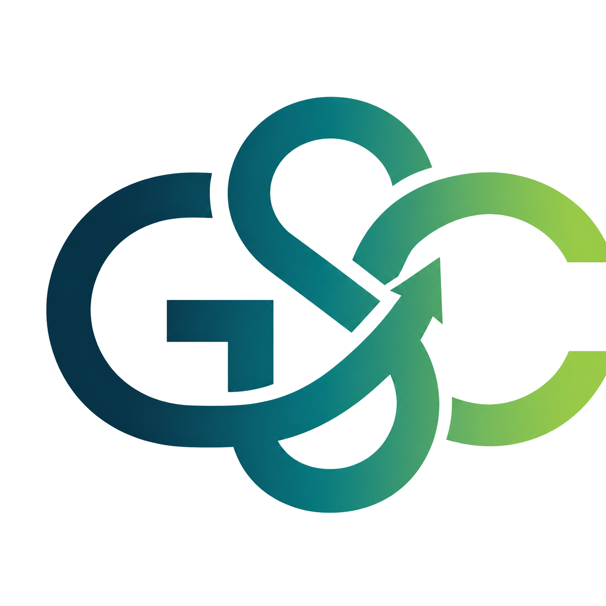
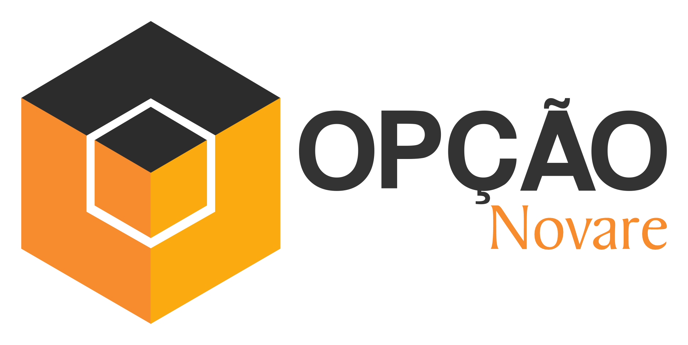
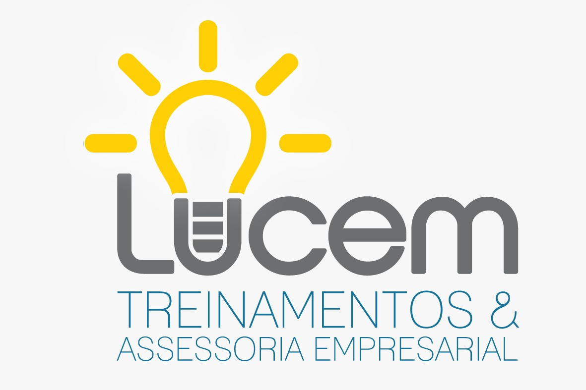
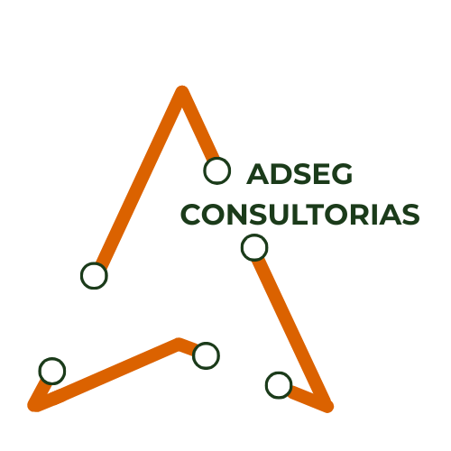

CMCA Consultoria
Site institucional desenvolvido para comunicar a atuação da consultoria com sofisticação, autoridade e clareza.
Conhecer site ↗Projetos desenvolvidos para diferentes empresas e segmentos, unindo estrutura, conteúdo e interface para criar experiências digitais claras e coerentes com cada negócio.
Site institucional desenvolvido para comunicar a atuação da consultoria com sofisticação, autoridade e clareza.
Conhecer site ↗
Uma presença digital pensada para apresentar soluções de gestão de forma acessível, organizada e direta.
Conhecer site ↗
Site que traduz tecnologia e soluções de gestão em uma navegação objetiva, profissional e alinhada ao negócio.
Conhecer site ↗
Uma experiência digital construída para dar visibilidade à proposta da marca e facilitar o acesso às suas soluções.
Conhecer site ↗
Site institucional com estrutura clara para apresentar consultoria, credibilidade e os caminhos de contato com a marca.
Conhecer site ↗